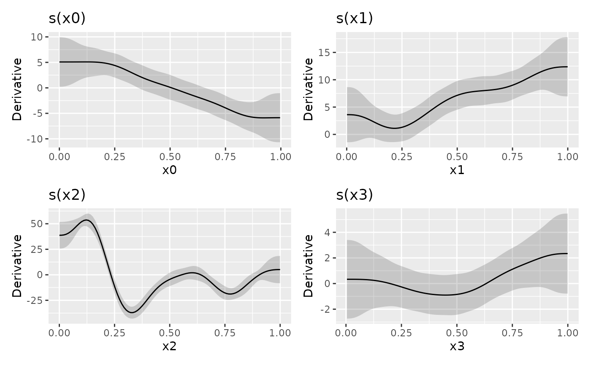
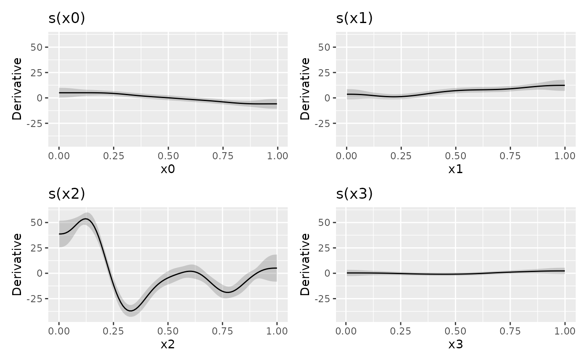

Plot derivatives of smooths
Usage
# S3 method for derivatives
draw(
object,
select = NULL,
scales = c("free", "fixed"),
add_change = FALSE,
change_type = c("change", "sizer"),
alpha = 0.2,
change_col = "black",
decrease_col = "#56B4E9",
increase_col = "#E69F00",
lwd_change = 1.5,
ncol = NULL,
nrow = NULL,
guides = "keep",
angle = NULL,
...
)
# S3 method for partial_derivatives
draw(
object,
select = NULL,
scales = c("free", "fixed"),
alpha = 0.2,
ncol = NULL,
nrow = NULL,
guides = "keep",
angle = NULL,
...
)Arguments
- object
a fitted GAM, the result of a call to
mgcv::gam().- select
character, logical, or numeric; which smooths to plot. If
NULL, the default, then all model smooths are drawn. Numericselectindexes the smooths in the order they are specified in the formula and stored inobject. Characterselectmatches the labels for smooths as shown for example in the output fromsummary(object). Logicalselectoperates as per numericselectin the order that smooths are stored.- scales
character; should all univariate smooths be plotted with the same y-axis scale? If
scales = "free", the default, each univariate smooth has its own y-axis scale. Ifscales = "fixed", a common y axis scale is used for all univariate smooths.Currently does not affect the y-axis scale of plots of the parametric terms.
- add_change
logical; should the periods of significant change be highlighted on the plot?
- change_type
character; the type of change to indicate. If
"change", no differentiation is made between periods of significant increase or decrease. If"sizer", the periods of increase and decrease are differentiated in the resulting plot.- alpha
numeric; alpha transparency for confidence or simultaneous interval.
- change_col, decrease_col, increase_col
colour specifications to use for indicating periods of change.
col_changeis used whenchange_type = "change", whilecol_decreaseandcol_increaseare used when `change_type = "sizer"``.- lwd_change
numeric; the
linewidthto use for the change indicators.- ncol, nrow
numeric; the numbers of rows and columns over which to spread the plots
- guides
character; one of
"keep"(the default),"collect", or"auto". Passed topatchwork::plot_layout()- angle
numeric; the angle at which the x axis tick labels are to be drawn passed to the
angleargument ofggplot2::guide_axis().- ...
additional arguments passed to
patchwork::wrap_plots().
Examples
load_mgcv()
dat <- data_sim("eg1", n = 800, dist = "normal", scale = 2, seed = 42)
mod <- gam(y ~ s(x0) + s(x1) + s(x2) + s(x3), data = dat, method = "REML")
## first derivative of all smooths
df <- derivatives(mod, type = "central")
draw(df)

## fixed axis scales
draw(df, scales = "fixed")
